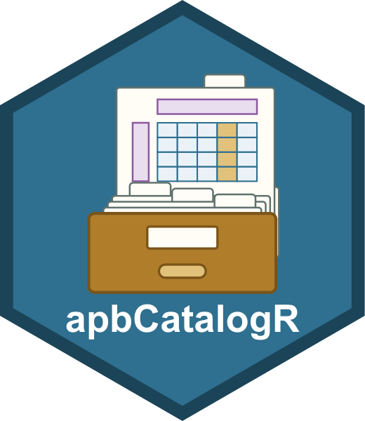
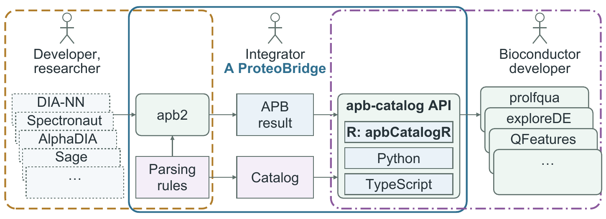

apbCatalogR


apb-catalog’s API in R: look up the fields of an APB result by meaning, such as a PEP or an unnormalized intensity, without naming vendor columns.
New API. This package is new, and its API may still change between releases. Feedback is very welcome: open an issue with what you need, what surprised you, or what broke.
Documentation: anndata-omics-bridge.github.io/apbCatalogR, with the vignette as the walkthrough.
Catalog viewer: fgcz-ms.uzh.ch/public/apb-catalog, every catalogue set with its entries, requirements and coverage, in the browser.
Contributing: the catalogs can be extended to suit your application, and you are welcome to create your own; see Contributing.

APB
The AnnData Proteomics Bridge, apb2, converts the reports of proteomics quantification software into one result layout. Declarative parse rules describe each vendor table, so one parser reads them all.
- Software: AlphaDIA, DIA-NN, FragPipe, MaxQuant, PEAKS, Sage, Spectronaut and more
- Levels: peptidoform ion, peptidoform, peptide, protein, peptidoform fragment
- Per level: one AnnData, runs as
obs, features asvar, measurements as layers - Formats: h5ad, h5mu, Parquet, DuckDB
Columns keep the vendor’s names: the posterior error probability is PEP in MaxQuant and DIA-NN, EG_PEP in Spectronaut.
apb-catalog
apb-catalog records what those columns mean, in reviewed catalogue sets. A consumer asks a set by key, such as pep or intensity, and gets the column.
| Set | Fields |
|---|---|
abundance_alpha |
Intensities, and whether the software normalizes them across runs |
confidence_alpha |
PEP and q-values per run and per feature |
proteobench_entrapment_alpha |
Precursor q-values for ProteoBench’s entrapment scoring |
apb_alpha |
Fields apb2 convert writes for every vendor: ProForma identifiers, decoy and contaminant flags |
obs_annotation_alpha |
Each run’s group and subject, from an SDRF or a prolfquapp table |
fasta_peptides_alpha |
apb-fasta’s peptide verification, once apb-fasta verify-peptides has run |
fasta_proteins_alpha |
apb-fasta’s protein annotation, once apb-fasta merge-annotations has run |
chromatography_alpha |
Retention times, peak bounds and widths, with their unit |
A lookup answers one of three ways:
- One field: the column, or its data
- Software does not report it:
NULL - Several fields: an
UnresolvedFielderror, never a silent choice
This package
apbCatalogR is apb-catalog’s Python API in R, as R6 classes with the same names and methods. Snapshots are not ported: DataCatalog$snapshot(), $resolve(), attach_snapshot() and ResolutionSnapshot have no R counterpart. It needs no Python: the catalogues come from a bundle shipped with the package.
| Call | Answers |
|---|---|
Catalog$new(software, version, set) |
From the catalogue alone, without data |
DataCatalog$new(result, set) |
On one result, the named sets alone, and returns the data |
catalogues(), rule_coverage(), catalogue_table() |
The sets, how each rule covers a set, every entry as a table |
read_parsed_levels(path) |
An APB result, .h5ad, .parquet or .duckdb, as ParsedLevels, one anndataR AnnData per level |
It does not convert vendor files. Convert with apb2; any of its h5ad, Parquet or DuckDB results reads the same:
apb2 convert DATA --params PARAMETER_FILE --format parquet --output result # writes result.parquetInstall
install.packages(c("BiocManager", "remotes"))
BiocManager::install("anndata-omics-bridge/apbCatalogR")Reading .h5ad results needs nothing more. Parquet results need arrow, DuckDB results duckdb and DBI:
install.packages(c("arrow", "duckdb", "DBI"))Use
Ask the catalogue which column a software version reports:
library(apbCatalogR)
diann <- Catalog$new("DIA-NN", "2.2.0", "abundance_alpha")$levels$peptidoform_ion
diann$layers$keys()
#> [1] "intensity" "intensity_ms1"
#> [3] "intensity_ms1_norm_settings" "intensity_norm_settings"
diann$layers[["intensity"]]
#> [1] "Precursor_Quantity"Get the data of a result:
result <- read_parsed_levels("result.parquet")
ion <- DataCatalog$new(result, "confidence_alpha", "apb_alpha")$levels$peptidoform_ion
ion$layers # key -> matrix, runs x features
ion$var # key -> vector, one value per feature
pep <- ion$layers$get("pep") # runs x features matrix, NULL when absent
ion$var[c("peptidoform_ion")] # a data.frameThe bundle
apb-catalog builds two bundles at each release:
- Bundle: the reviewed catalogue sets and the levels apb2 converts for each software version; lookups read only this
- Test bundle: synthetic results, with apb-catalog’s answers on them; the tests check that R gives the same answers
How R gets the latest bundle:
- Shipped:
inst/extdata/bundle/, with the test bundle ininst/extdata/test-bundle/, both replaced by a pull request from each apb-catalog release update_catalog(): downloads the latest release’s bundle into the user cache; works from the next apb-catalog release, the first to ship the bundle- Each session uses the newest bundle, shipped or downloaded;
catalog_version()reports which